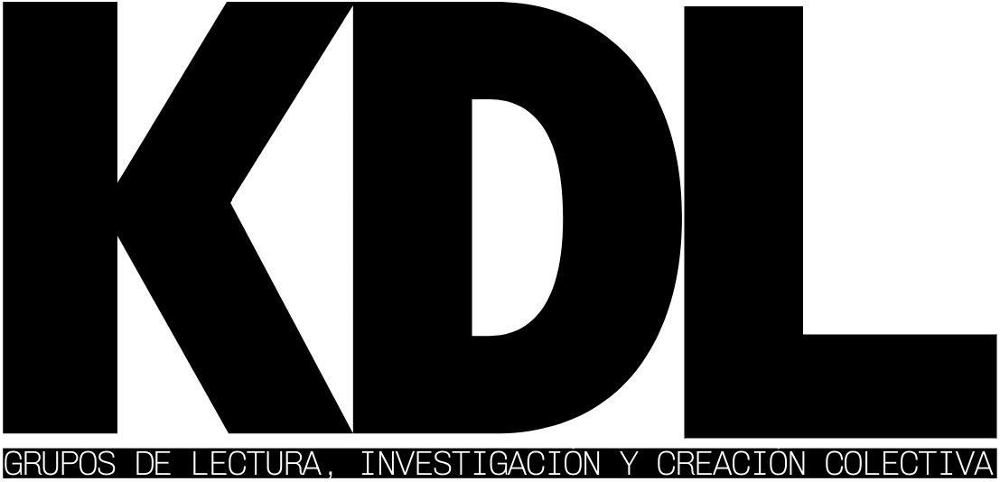
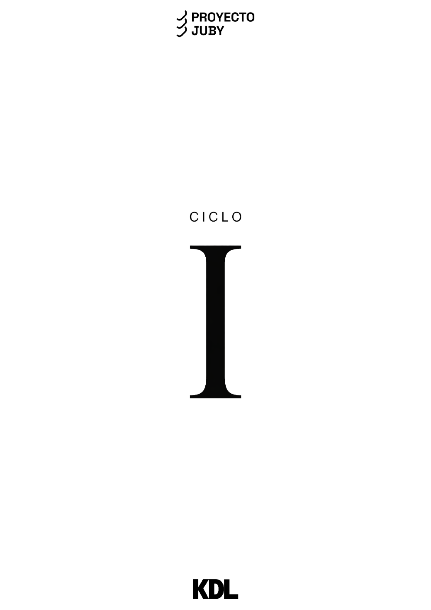
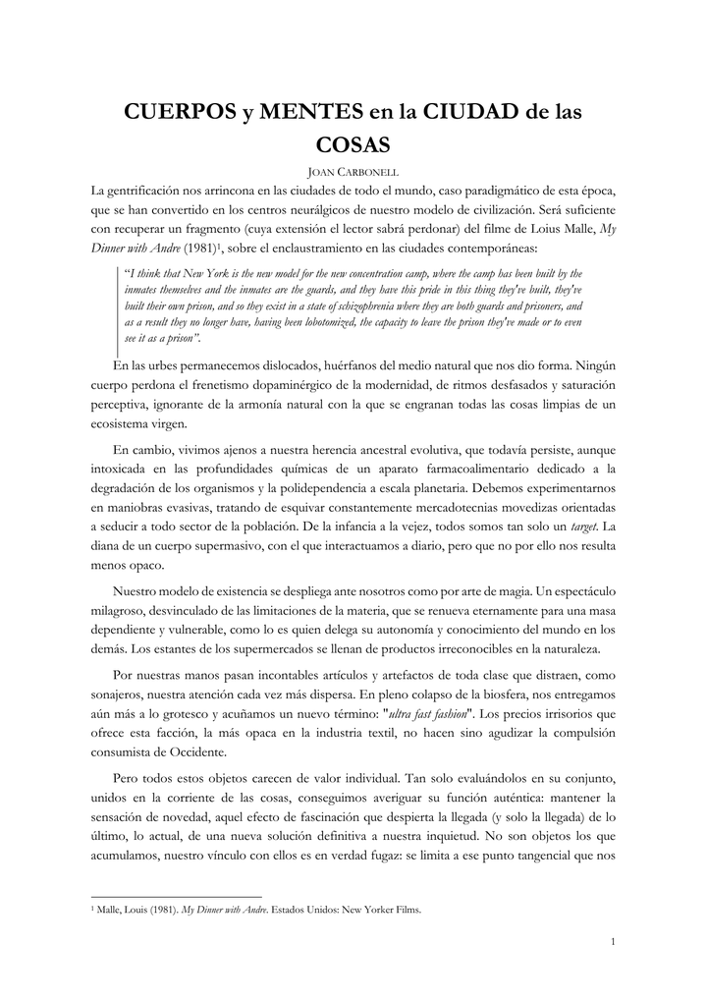

Actividad 01 · 2–3 octubre 2026
I Jornadas de Aceleracionismo y Pensamiento Especulativo
Un laboratorio de urgencia teórica y creatividad radical para especular sobre los futuros contingentes que ya operan en nuestro presente.

KLUB DEL LIBRE es un club del libro organizado en el Centro Cultural Proyecto Juby, un espacio autogestionado situado en el barrio de La Pechina dedicado a la contracultura y al aprendizaje comunal. KLUB DEL LIBRE también es una iniciativa de activación ciudadana. Además, KLUB DEL LIBRE es un laboratorio de investigación y creación colectiva dedicado al análisis de la fenomenología tecnosocial y sus implicaciones políticas, económicas y culturales. Por último, KLUB DEL LIBRE es un síntoma de la postmodernidad, una respuesta al porvenir que asoma en el horizonte para el que queremos estar preparados.
Este proyecto sigue el itinerario abierto hace más de una década por Nick Srnicek y Alex Williams en su Manifesto for an Accelerationist Politics (2013). Muchas de las ideas condensadas en este manifiesto-web son el fruto de conexiones elaboradas entre sus propuestas y los desarrollos posteriores de otrxs autorxs. En lo que sigue, podrán encontrarse las referencias a estas obras.
Asistimos al amanecer de un nuevo régimen.
Los poderes públicos están paralizados ante la alta mutabilidad del presente y abdican de su deber de protegernos, externalizando sus funciones más esenciales (como su deber de garantizar nuestra salud, nuestra educación o nuestra seguridad...).
En el vacío resultante se adentran progresivamente grandes corporaciones y plataformas tecnológicas, consolidándose como los nuevos imperios del Siglo XXI.
Lo público se repliega mientras lo privado se expande y, como resultado, nos envuelve un capital tecnológico con un poder sin precedentes.
Los desarrollos tecnológicos, automáticamente secuestrados por la privatización de la axiomática capitalista, quedan incapacitados para operar como un instrumento neutro, libre y al servicio de la mayoría.
Tal y como lo expone el jurista y estratega geoeconómico, director del Consorcio de Geoeconomía de Helsinki, el Dr. Jens Hillebrand Pohl, en su informe para la revista 032c Techno-Feudalism: I’m Sorry, But You Do Not Have Enough Coins for Democracy: “mediante el control sobre la infraestructura digital, los datos y los algoritmos”, el potencial liberador de la innovación tecnológica queda reducido a una red de infraestructuras puestas al servicio de la acumulación de poder e influencia de una ínfima minoría capaz ahora de doblegar el pensamiento y los deseos de los pueblos de la Tierra.
Las herramientas que podrían cambiar el mundo se acaparan y se pervierten, quedando exclusivamente dedicadas a la vigilancia masiva, la manipulación ideológica, la infantilización de la vida y la mercantilización de las personas.
La artista y tecnóloga Mindy Seu, en su Cyberfeminism Index (2023) resume la situación actual de un modo tan claro y eficiente que vale la pena trasladarlo en sus mismas palabras: " [the Cyberfeminism Index] is being operated in a specific context, one in which platform oligopolies reign supreme, surveillance capitalism commodifies us, and techno-dystopia looms. Its existence reflects that reality".
Al igual que la obra de Seu, la existencia de este proyecto también refleja el mismo escenario, que todxs compartimos.
Sin embargo, qué tan distinto podría ser un mundo en el que los desarrollos de la técnica se tuvieran como verdaderas conquistas de la raza humana en su conjunto.
Uno en el que la tecnología, como patrimonio de la humanidad, nos brindara la llave de una puerta nunca antes abierta, hacia “futuros de exploración espacial, conmoción futurista y potencial revolucionario”.
Como afirmaron Srnicek y Williams, “ciertamente, aún no sabemos lo que un cuerpo tecnosocial moderno puede hacer”, y todavía está por llegar el día en el que el dominio y la superación de las limitaciones de la realidad propicien un verdadero “cambio en la esencia misma de lo “humano””.
Por ello, debemos recordar que la tecnología no pertenece a nadie y desnaturalizarla, rompiendo el vínculo que la mantiene atada a sus secuestradores.
Debemos reivindicar su verdadera naturaleza, como medio neutral, como una mera herramienta cuyos resultados dependerán en gran medida de las condiciones colectivas y de poder bajo las que se utilice.
Lo verdaderamente relevante será quién, cómo y para qué empleemos las herramientas tecnológicas.
Tal como apuntaron Armen Avanessian y Mauro Reis en su Introducción a su antología Aceleracionismo: Estrategias para una Transición hacia el Postcapitalismo (2017), “la aceleración contemporánea se presenta de forma ambivalente: como proceso inherente a la globalización y al avance tecnológico, y como posible praxis emancipatoria”
Las infraestructuras tecnológicas, lejos de ser únicamente un sistema a demoler, pueden actuar como palanca de transformación, como una plataforma de lanzamiento hacia un porvenir liberado del sistema de valor, de las estructuras de control y de las patologías limitantes del Capitalismo tardío al que asistimos.
Ante este escenario, en KDL nos centramos en la alfabetización tecnopolítica. Defendemos la importancia de adquirir los conocimientos sociotécnicos relativos a las infraestructuras de la sociedad contemporánea con el objetivo de reapropiarnos de ellas y subvertirlas, poniéndolas al servicio de la cooperación, la emancipación y la creación de futuros comunes. Más allá, creemos en el poder transformador que tiene estrechar lazos entre las personas y fortalecer las comunidades de las que formamos parte. Solo mediante este proceso colectivo lograremos ser menos vulnerables a la manipulación, la fragmentación y la explotación narcisista a la que estamos sometidxs bajo el complejo tecnoindustrial contemporáneo, ganando así verdadera agencia sobre nuestro destino como especie.
Con esta misión, KDL se concibe como un nodo más de aquella ecología de las organizaciones que imaginaron Srnicek y Williams hace más de una década. Una red de redes, compuesta por iniciativas operando al unísono con el objetivo común de fortalecer la inteligencia colectiva distribuida necesaria para la redirección de la aceleración del presente hacia objetivos de libertad y justicia social. Para esa totalidad estratégica somos una contribución más, con una marcada vocación cooperativa y creativa.
ETHOS — Situadxs en la dimensión sociopolítica y ética de los desarrollos tecnológicos, estamos vinculadxs a los principios de libertad y democratización propios del movimiento de Software Libre, así como a la filosofía práctica y colaborativa del DIY (Do It Yourself) y del DIWO (Do It With Others).
Queremos leer y aprender.
Queremos jugar, explorar, reapropiar y subvertir.
Queremos ayudar.
Queremos abrir nuestro tiempo a la cooperación, al cuidado y al cariño.
Queremos divertirnos.
Estos son los ciclos abiertos para el curso 2026/2027. Podéis solicitar plaza directamente desde la convocatoria que os interese.
Otoño 2026 — Primavera 2027
Otoño 2026 — Primavera 2027
Presentaciones, conversaciones, talleres, sesiones abiertas y colaboraciones tendrán aquí su calendario y su memoria documental.
La sección distinguirá las próximas actividades de las ya realizadas para que sea fácil participar y volver sobre lo ocurrido.
Actividad 01 · 2–3 octubre 2026
Un laboratorio de urgencia teórica y creatividad radical para especular sobre los futuros contingentes que ya operan en nuestro presente.
A continuación encontraréis un registro de los ciclos atravesados por nuestros grupos de estudio. Podéis entrar en cada uno para consultar sus detalles.
Invierno 2025 — Verano 2026
Este archivo reunirá ensayos, ficción, vídeos, conversaciones, imágenes y piezas nacidas del trabajo de miembros del club y personas allegadas.
Las publicaciones podrán responder a un ciclo o abrir líneas propias. La colección crecerá como una editorial colaborativa y una memoria pública del pensamiento que circula alrededor de KDL.

El dossier-fanzine del primer ciclo: un punto de encuentro entre textos, referencias, imágenes, ideas y personas.

Ensayo de Joan Carbonell sobre la ciudad contemporánea, la cultura material y las infraestructuras opacas del consumo.
KLUB DEL LIBRE se concibe como un nodo integrante de una ecología de las organizaciones, una red de inteligencia colectiva distribuida que deberá mantenerse en constante retroalimentación sobre la base de la heterogeneidad que entraña.
Entendemos la curaduría como una práctica de orientación compartida. Seleccionamos y conectamos textos, herramientas, intervenciones, infraestructuras, iniciativas y experimentos que atraviesan la cultura de red, la tecnopolítica, el software libre, la investigación artística y las formas emergentes de cooperación.
Usamos Are.na como infraestructura pública de esa memoria: un espacio independiente y sin publicidad para guardar contenidos, construir colecciones llamadas canales y establecer conexiones entre ideas sin someterlas a la cronología algorítmica de un feed. Su API y su filosofía open source by default permiten que estas colecciones circulen también fuera de la plataforma.
Cargando canal…
Cargando canal…
Cargando canal…
Cargando canal…
Cargando canal…
Nos interesan propuestas literarias, disciplinas artísticas, iniciativas de cultura abierta y libre, y proyectos de experimentación contracultural.